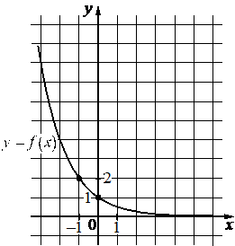

Авторский разбор и аудит предварительны; внешней экспертизы нет.
Модель автора: claude-opus-5-5 (opus; effort=low); в основных частотах: True ·
Впишите правильный ответ.
На рисунке изображён график функции вида . Найдите
значение .

КЭС: 3.5 Показательная и логарифмическая функции, их свойства и графики
8
| ID / вход | Действие | Результат | Локальные KC |
|---|---|---|---|
| s1 · condition | Считать с графика координаты отмеченной точки графика с целыми координатами | График проходит через точку (-1; 2) | kc1 |
| s2 · condition, s1 | Подставить точку в f(x)=a^x и найти основание a | a^{-1}=2, a=1/2 | kc2 |
| s3 · s2 | Вычислить значение показательной функции в x=-3 | f(-3)=(1/2)^{-3}=8 | kc3 |
[
{
"id": "m1",
"name": "Восстановление формулы функции по точке графика и вычисление значения",
"step_ids": [
"s1",
"s2",
"s3"
]
}
]Вход: график функции на клетчатой сетке с отмеченными точками. Операция: считать координаты точки, через которую проходит график. Граница: только точки с однозначно читаемыми координатами (узлы сетки).
{
"local_kc_id": "kc1",
"status": "match",
"catalog_kc_id": "graph_coordinates",
"evidence": [
{
"ref": "step:s1:action",
"quote": "Считать с графика координаты отмеченной точки графика с целыми координатами"
},
{
"ref": "step:s1:result",
"quote": "График проходит через точку (-1; 2)"
},
{
"ref": "image:assets/5ff05d976eaa90aab04eba81.png",
"region_description": "Клетчатая сетка с единичным масштабом (подписи -1, 0, 1 на оси x и 1, 2 на оси y); на убывающей кривой y=f(x) отмечены жирные точки в узлах (-1; 2) и (0; 1)."
}
],
"context_refs": [
"condition"
],
"alternatives_checked": [
{
"catalog_kc_id": "literal_3ac0ecd3cd49",
"reason": "Восстановление основания — последующее отдельное действие, в s1 не выполняется."
}
],
"rationale": "Операция — считывание координат отмеченной точки по установленному масштабу сетки; точка (-1; 2) лежит в узле и отмечена на рисунке, что соответствует определению graph_coordinates целиком. Восстановление формулы исключено границей узла.",
"proposal": null,
"blocking": false,
"issue_ids": []
}Вход: вид функции с неизвестным параметром и точка графика. Операция: подставить координаты и решить уравнение относительно параметра. Граница: параметр однозначно определяется уравнением с учётом ограничений вида (основание степени положительно и не равно 1).
{
"local_kc_id": "kc2",
"status": "match",
"catalog_kc_id": "literal_3ac0ecd3cd49",
"evidence": [
{
"ref": "step:s2:action",
"quote": "Подставить точку в f(x)=a^x и найти основание a"
},
{
"ref": "step:s2:result",
"quote": "a^{-1}=2, a=1/2"
}
],
"context_refs": [
"condition",
"step:s1:result"
],
"alternatives_checked": [
{
"catalog_kc_id": "direct_proportion",
"reason": "Касается y=kx, а не показательной функции."
},
{
"catalog_kc_id": "literal_51a8c0abd718",
"reason": "Касается y=a√x."
},
{
"catalog_kc_id": "exponential_equation",
"reason": "Неизвестна не переменная показателя, а основание; приравнивание показателей не выполняется."
},
{
"catalog_kc_id": "physical_formula_substitution",
"reason": "Относится к подстановке величин в прикладную формулу, а не к восстановлению параметра функции."
}
],
"rationale": "Наблюдаемое действие: для f(x)=a^x по точке с ненулевой абсциссой -1 (из s1) найдено основание a=1/2 — полностью совпадает с определением literal_3ac0ecd3cd49. Авторский кандидат сформулирован шире (любой параметр функции), но в данной задаче реализован ровно этот частный случай; соответствие относится к наблюдаемому действию.",
"proposal": null,
"blocking": false,
"issue_ids": []
}Вход: основание и целый отрицательный показатель. Операция: перейти к обратной величине и возвести в натуральную степень. Граница: ненулевое основание.
{
"local_kc_id": "kc3",
"status": "new_candidate",
"catalog_kc_id": null,
"evidence": [
{
"ref": "step:s3:result",
"quote": "f(-3)=(1/2)^{-3}=8"
}
],
"context_refs": [
"step:s2:result"
],
"alternatives_checked": [
{
"catalog_kc_id": "literal_6308771d01a6",
"reason": "Описывает подстановку аргумента в установленную формулу и вычисление в целом; кандидат kc3 — только вычисление степени с отрицательным целым показателем, узкий компонент этого шага. Сам шаг s3 соответствует literal_6308771d01a6, но kc3 по определению ему не равен."
},
{
"catalog_kc_id": "power_laws",
"reason": "Законы степени степени, произведения и частного; переход к обратной величине при отрицательном показателе не описан."
}
],
"rationale": "Операция — вычисление (1/2)^{-3} через обратную величину 2^3=8; объект — ненулевое основание и целый отрицательный показатель. В каталоге нет узла с таким определением; ближайший literal_6308771d01a6 шире и охватывает подстановку. Вычисление выполнено верно.",
"proposal": {
"name": "Вычислять степень с целым отрицательным показателем",
"definition": "Для ненулевого основания b и натурального n заменить b^{-n} на (1/b)^n и вычислить. Подстановка аргумента в формулу функции — отдельное действие (literal_6308771d01a6)."
},
"blocking": false,
"issue_ids": [
"i1"
]
}[]
[
{
"id": "i1",
"kind": "missing_annotation",
"refs": [
"step:s3:action"
],
"description": "Шаг s3 включает подстановку x=-3 в восстановленную формулу f(x)=(1/2)^x, что соответствует каталожному literal_6308771d01a6; авторская разметка указывает только узкий kc3 (отрицательный показатель), подстановка не размечена отдельно.",
"blocking": false,
"affected_local_kc_ids": [
"kc3"
]
}
]{
"author_path": "data/annotation/runs/2026-11-09-fipi-team-bogdan108-next-100/raw/author/783DBA.json",
"auditor_path": "data/annotation/runs/2026-11-09-fipi-team-bogdan108-next-100/raw/auditor/783DBA.json",
"accepted_after_review": null
}